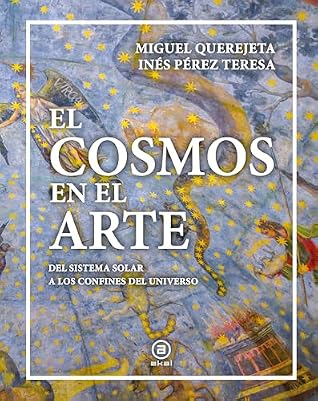

El cosmos en el arte: Del sistema solar a los confines del universo
Reseña por Jorge I. Zuluaga

Ver reseña en GoodReads (necesita cuenta)
Lo compramos inicialmente atraídos por el título y la portada; sí, así de superficial fue nuestro primer contacto con El cosmos en el arte. Afortunadamente, esta primera impresión gráfica se correspondió con un excelente contenido.
El cosmos en el arte realiza un recorrido por el universo, el sistema solar, las galaxias y la estructura a gran escala, pero, más importante aún, por el cielo sobre nuestras cabezas. Avanza constelación a constelación, mostrando página a página obras artísticas y mapas clásicos relacionados con el tema de cada sección. La selección del material gráfico es excepcional y cubre una dilatada porción de la historia del arte, tanto temporal como geográficamente: desde la prehistoria hasta las postrimerías del siglo XX, y desde Oceanía hasta los grandes centros artísticos europeos.
Pero lo más atractivo de este libro es, definitivamente, su recorrido total y casi exhaustivo del cielo, constelación a constelación, estación a estación, historia a historia. ¡Fantástico! Como astrónomo aficionado primero y profesional desde hace más de veinte años, he tenido la oportunidad de leer o usar como referencia muchos libros con guías del firmamento. Es cierto que El cosmos en el arte no contiene la guía más detallada para las estrellas y los objetos de espacio profundo, pero narra una historia básica —y a veces muy profunda— sobre el origen de cada constelación (quién la introdujo y por qué, en el caso de las modernas) y repasa las historias de la mitología grecolatina que rodean a sus personajes. ¡Doblemente fantástico!
Ahora, cada vez que pienso o escucho mencionar una constelación en mi trabajo como astrónomo, recuerdo una historia que leí en este libro. Lamento mucho no haber conocido mejor estas narraciones durante los años en que hice salidas de campo observacionales con colegas y con el público. ¡Habría sido una experiencia aún más enriquecedora!
Aunque no me gusta mucho tener que emitir este juicio (lo hago porque me lo han preguntado), debo admitir que los datos astronómicos son buenos, pero no todos son estrictamente precisos. A pesar de que el primer autor, el doctor Miguel Querejeta, es astrofísico, creo que le faltó revisar uno que otro hecho impreciso que se consigna en la obra. Por otro lado, la huella de la doctora Inés Pérez Teresa, experta en historia del arte y medievalista, definitivamente se siente en todo el texto, aunque carezco de la formación necesaria para juzgar la exactitud de los datos en su materia.
Adquirir este título debería ser obligatorio para cualquier persona amante del firmamento, la mitología y la historia del arte asociada a ambas.